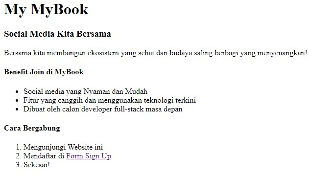

Rangkuman Materi Git
1. Versioning Control System
Version Control System digunakan untuk mengelolah perubahan yang terjadi pada source code. Version control system mempermudah kita dalam berkolaborasi membangun sebuah aplikasi karena kita bisa mengetahui kapan perubahan itu terjadi dan siapa yang melakukan perubahan tersebut. Sehingga kita mudah melakukan tracking pada saat kerjasama team. Pada dasarnya terdapat banyak Version control system, seperti subversion, cvs, mercurial, dll.
2. Workflow Collaboration
Dalam mengembangkan sebuah software baik secara individu maupun kolaborasi dalam sebuah tim, ada baiknya kita perlu memahami alur kerja untuk berkolaborasi dalam github, sehingga pengembangan software menjadi lebih efisien.
Notes :
- Jangan melakukan perubahan source code pada branch master, Hal ini karena branch master merupakan branch utama yang digunakan saat sesi production. Hal yang dapat dilakukan adalah dengan membuat branch development, branch development ini merupakan branch khusus yang digunakan saat proses pengembangan software.
- Hindari melakukan perubahan atau penambahan fitur langsung pada branch development. Hal yang sebaiknya dilakukan adalah dengan membuat branch baru untuk setiap fitur yang ingin ditambahkan. Pada saat fitur tersebut sudah fix, kemudian lakukan merge ke branch development.
Task :
Task di section ini adalah membuat sebuah repository baru di github, lalu membuat beberapa branch yaitu branch development, feature1 dan feature2. Setelah membuat sebuah projek di branch master maka selanjutnya membuat 3 branch lainnya. Lalu di branch feature1 ditambahkan sebuah fitur baru dan kemudian di merge dengan branch development. Kemudian langkah tersebut diulangi untuk branch feature2. Setelah selesai maka proses commit dan push tiap branch dapat di liat di menu insight -> network
Screenshot of My Task
Rangkuman Materi UI/UX
#1. User Experience (UX)
Berkaitan tentang hal apa saja yang user rasakan ketika menggunakan produk yang kita buat. Terdapat 4 UX Design Thinking, yaitu
- Emphaty
- Define
- Ideate
- Prototype
Fokus pertama yang harus dilakukan adalah untuk kebutuhan user, bagaimana cara kita memahami kebutuhan, keinginan dan hal yang tidak disukai oleh pengguna. Hal ini juga tergantung oleh user Persona. Jadi tiap-tiap user memiliki ekspektasi, kebutuhan dan keinginan yang berbeda.
Pada stage ini kita mengumpulkan informasi pada stage Emphaty. Mengumpulkan segala informasi yang kita tahu tentang user, apa masalahnya dan potensi kita untuk menyelesaikan masalah tersebut
Setelah mengetahui segala informasi tentang apa saja yang kita butuhkan, mulai dari memahami produk kita untuk siapa, apa kegunaannya dan kenapa produk kita bisa menyelesaikan masalah bagi user, langkah selanjutnya adalah mulai mengimplementasikan ide.
Selanjutnya adalah dengan membuat prototype produk. Tujuannya adalah testing product sebelum ke tahap final realese. Kita bisa mendapatkan feedback dari user, stakeholder dan tim dari protoype ini. Main Pillar Prototype adalah Representation, Precision and Interactivity
#2 User Intefaces (UI)
Adalah interaksi visual user terhadap produk kita. Terdapat 4 pilar dalam UI Desiign, yaitu :
- Consistency
- Keep the interface simple
- Good Typography
- Offer Informative feedback
Konsistensi artinya menggunakan pattern dan urutan yang sama pada semua situasi.
Usahakan menghindari elemen-elemen yang tidak diperlukan agar desain tetap simpel dan memudahkan user. Serta menggunakan bahasa yang mudah dipahami oleh user.
Menggunakan typeface dengan pola yang sama serta memperhatikan jenis font, ukuran, dan tata letak yang tepat. Hal ini diharuskan untuk meningkatkan readibility user.
Memberikan feedback yang informatif, jelas dan relevan.
Dengan menerapkan 4 pilar ini bisa dipastikan UI berkualitas bagus dan project akan maksimal.
#3. Prototype
Sebuah simulasi yang menggambarkan final-product kita. Berfungsi sebagai mengetes produk sebelum kita menghabiskan sumber daya dalam membuat sebuah project. Hal ini agar mendapat feedback dari user, stakeholder dan tim serta bisa menunjukkan interaksi antar developer.
Task :
Task di section ini adalah menganalisa beberapa desain website. Analisa yang dilakukan berupa mengidentifikasi bagian-bagian dari website, menentukan UI dan UX yang ada di desain website tersebut dan juga menentukan color palette dari salah satu desain website. Berikut adalah desain website yang saya pilih di praktikum ini:
Screenshots:
- Image #1
- Image #2
- Image #3


Rangkuman Materi Figma
#1. Figma
Figma adalah vector grapichs editor dan prototyping tools yang berbasis web dan mendukung untuk offline pada aplikasi desktop di Windows atau MacOS.
#2. Kelebihan Figma
- Free
- Bisa dijalnkan di Windows dan MacOS
- Real-time collaboration dengan tim
- Bisa mengimpor file Sketch
- Integrated Developers hand-off/Specs for Mac and PC
- Fantastic Team library/Design Systems, a single source of truth
- Integrated high-quality prototyping
#3. Kekurangan Figma
Hanya bisa menggunakan Figma ketika online. Kita bisa menyimpan project secara lokal dan kembali mengedit saat online. Serta tidak bisa mengekspor Sketch
Task :
Task di section ini adalah membuat sebuah desain figma berdasarkan dengan desain yang dipilih di section 3. Desain web yang dipilih yaitu ini. Selain membuat desainnya, desain tersebut juga harus diprototype.
Rangkuman Materi HTML
1. HTML
Merupakan singkatan dari HyperText Markup Language, atau bisa juga disebut dengan bahasa markup, yang digunakan untuk membuat struktur dasar pada sebuah halaman website. File HTML dapat dijalankan melalui web browser seperti Google Chrome, Microsoft Edge, Safari, dll. Untuk membuat file HTML, perlu menggunakan sebuah code editor, seperti:
- Notepad++
- Sublime Text
- Atom
- Visual Studio Code
2. Struktur Dasar HTML
DOCTYPE
DOCTYPE yang merupakan singkatan dari Document Type Declaration dan juga dikenal sebagai DTD adalah deklarasi dokumen yang digunakan untuk menginfokan tipe dokumen dan versi HTML yang digunakan kepada aplikasi web browser. Penulisan DOCTYPE harus berada pada awal dokumen.
Tag HTML
Tag html digunakan untuk menginformasikan pada aplikasi web browser bahwa tipe dokomen tersebut adalah HTML. Tag html juga menjadi wadah untuk semua elemen HTML. Jadi, semua elemen harus berada di dalam tag tersebut kecuali DOCTYPE karena DOCTYPE bukan termasuk elemen melainkan deklarasi dokumen.
Tag Head
Tag head merupakan tag yang berisi informasi tentang halaman yang tidak ditampilkan di halaman web browser. Misalnya: source css, js atau lainnya yang berasal dari luar, informasi meta, title, dan lainnya.
Tag Body
Tag body merupakan tag yang berisi elemen-elemen yang ditampilkan di halaman web. Misalnya teks yang berupa paragraph, heading, menampilkan gambar, membuat tabel, dan lainnya. Di dalam tag body inilah konten visual dari halaman web ditempatkan.
3. Tag-tag pada HTML
- Tag Heading (h1-h6)
- Tag Paragraph (p)
- Tag Table (table)
- Tag Link (a)
- Tag Image (img)
- Tag Form (form)
- Tag List (ul li)
- Tag Styling (strong, em, br, u)
Task :
Task di section ini adalah membuat 3 buah dokumen HTML. Pada dokumen HTML pertama yaitu index.html berisi berbagai macam teks dengan heading yang bermacam-macam. Lalu ada ordered list dan juga unordered list. Terakhir ada sebuah hyperlink yang jika diklik akan menuju dokumen form.html. Di halaman ini berisi sebuah form dengan berbagai macam jenis inputan mulai dari teks, radio button, checkbox hingga combobox. Lalu ada tombol Sign Up yang jika diklik akan mengarahkan ke dokumen welcome.html. Di file ini hanya berisi teks selamat datang.
- Index 
- Form Sign Up
- Welcome Page
Rangkuman Materi CSS
#1. Pengertian CSS
Merupakan singkatan dari Cascading Style Sheet yang berfungsi untuk memberi tampilan visual yang lebih baik pada halaman yang telah dibuat menggunakan HTML. CSS dapat mengatur styling pada tampilan website, dan juga dapat mengatur Layouting pada halaman web. Terdapat 3 cara menambahkan CSS, yaitu:
- Inline CSS
- Internal CSS
- External CSS
#2. CSS Selector
Salah satu rule set dari Css yang fungsinya tidak berbeda jauh dengan namanya (Selector) yakni memilih suatu elemen yang ingin anda beri gaya atau style css.
#3. CSS Grouping
CSS Grouping merupakan teknik pemberian styling kepada lebih dari 1 element pada html. Hal ini dilakukan apabila terdapat lebih dari 1 element yang berbeda namun membutuhkan styling yang sama.
Task :
Task di section ini adalah membuat sebuah file HTML dan CSS yang menyerupai dengan contohnya. Ada dua macam file yang harus dibuat. File pertama adalah 3 buah kotak dengan posisi dan properti tertentu. Lalu untuk file kedua berupa sebuah desain website sederhana dengan navbar dan footer sekaligus beberapa post di tengahnya sebagai konten.
Screenshot :
Rangkuman Materi Bootstrap
Bootstrap adalah salah satu framework frontend yang bisa digunakan untuk mempermudah membuat modern-website atau web apps.
Kenapa Harus Menggunakan Bootstrap ?
- Bisa Menggunakannya Dengan gratis serta open sources.
- Mudah dipelajari karena dalam dokumentasinya sudah tertera lengkap apa yang akan kita butuhkan untuk mendesain tampilan web.
- Cepat dan mendukung Responsive.
Dokumentasi Bootstrap
Terdapat sangat banyak class yang disediakan oleh bootstrap untuk digunakan, dan semua dijelaskan secara detail pada dokumentasinya
Task :
Task di section ini adalah membuat sebuah website menggunakan Bootstrap berdasarkan desain yang sudah diberikan. Untuk membuat website tersebut memerlukan fitur-fitur dari kelas Bootstrap untuk memudahkan dalam membuat web tersebut menjadi responsif.
Rangkuman Materi Javascript Refreshment
#1. Javascript Values
Perbedaan Var, Let, Const
- Pada Var, dan let bisa deklarasi variabel tanpa nilai, sedangkan pada Const tidak bisa.
- Keyword Var bisa dilakukan Deklarasi ulang, sedangkan pada let dan const tidak bisa.
- Keyword var dan let bisa dilakukan re-assign value, sedangkan const tidak.
Tipe Data Javascript
Tipe data pada javascript terbagi menjadi 2 yaitu tipe data primitif dan tipe data objek.
- Tipe Data Primitif: string, number, boolean, undefined, null, symbol
- Tipe Data Object: Object, Array, Function, Date, Set, Map, Weak Set, Weak Map
#2. Control Flow JS
Control flow mengatur alur eksekusi pada statement, atau jalannya program sesuai keinginan kita. Contoh control flow yaitu pengulanan, dan pengkondisian.
- Pengulangan: For, While, Do While.
- Pengkondisian: IF...Else, Switch, Block, Try, Catch, Break, Continue, Throw.
#3. Funtion JS
Function digunakan untuk melakukan serangkaian komputasi / prosedur yang dapat digunakan berulang kali dan akan mengembalikan sebuah nilai. Terdapat 2 jenis function, yaitu function expression dan arrow function
Task :
Task pada section ini adalah diberikan sebuah kode dan beberapa soal mengenai kode tersebut. Kode tersebut lalu dianalisa untuk dapat menjawab beberapa soal-soal yang ada. Selain menganalisa, kita juga diminta untuk merubah atau menambahkan di kode tersebut agar output yang dikeluarkan sesuai dengan yang diminta pada soal.
Screenshot :
- Task 1
- Task 2